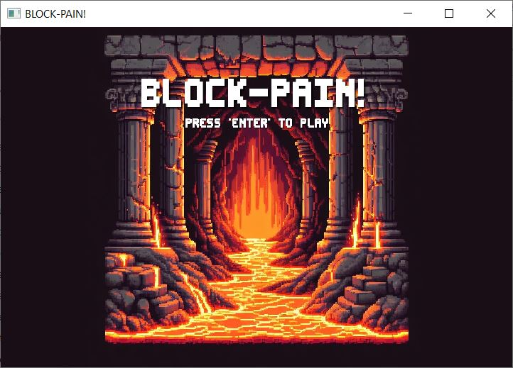
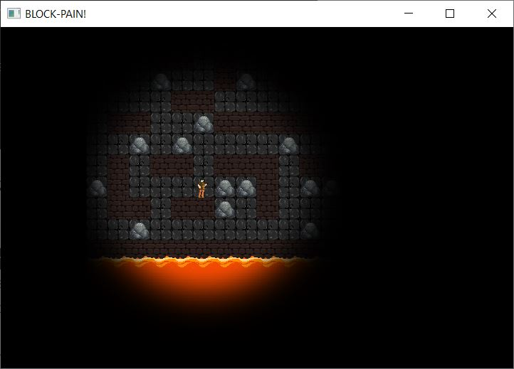

Dette spillet er utviklet av Amateur Alliance som gruppeprosjekt i INF112 ved UiB, og er designet for å være et moro og utfordrende puzzle-spill. Spillet er et top down 2d spill, der man beveger spilleren enten ved bruk WASD eller piltastene for å navigere et labyrint-lignende kart. Kartet har hindringer i form av steiner som kan dyttes, og en stadig stigende lava. Underveis er det mulig å plukke opp powerups (en hammer) som gjør det mulig å knuse vegger. Dersom lavaen treffer spilleren dør man, og får game over. Dersom man når toppen av kartet vinner man.
 For mer informasjon, kontakt meg på matsamundsenwintersto03@gmail.com.